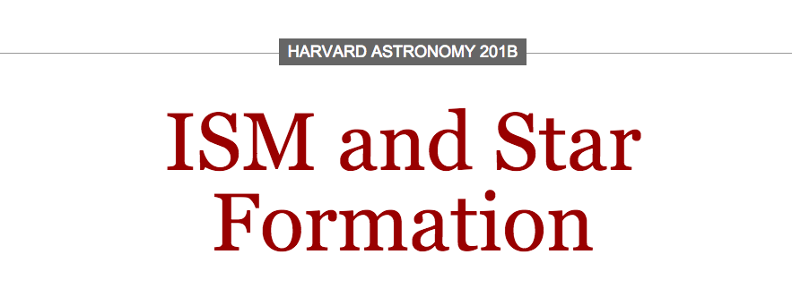

In Spring 2013, Professor Alyssa Goodman and Teaching Fellows Nathan Sanders and Chris Faesi are faced with a dilemma: While our fundamental understanding of the ISM & Star Formation hasn’t changed in the past decade, teaching and learning have changed drastically. So, Professor Goodman shifts the structure of her ISM course to match the times… and puts using visualization technology in the hands of students.